Repair Procedures
Removal
1. If the compressor is marginally operable, run the engine at idle speed, and let the air conditioning work for a few minutes, then shut the engine off.
2. Disconnect the negative cable from the battery.
3. Recover the refrigerant with a recovery/charging station.
4. Loosen the drive belt.
5. Remove the bolts, then disconnect the suction line (A) and discharge line (B) from the compressor. Plug or cap the lines immediately after disconnecting them to avoid moisture and dust contamination.
Tightening torque :
18.6 - 27.4N.m (1.9 - 2.8 kgf.m, 13.7 - 20.2 lbf.ft)
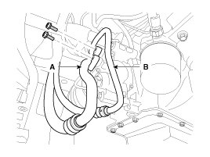
6. Disconnect the compressor clutch connector(A), and then remove mounting bolts and the compressor (B).
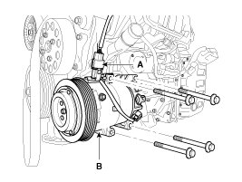
Installation
1. Make sure of the length of compressor mounting bolts, and then tighten it A->B->C order.
Tightening torque :
20.1 - 32.9N.m (2.04 - 3.36kgf.m, 14.7 - 24.3 lbf.ft)
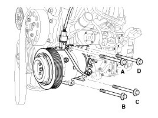
2. Install in the reverse order of removal, and note these items.
A. If you're installing a new compressor, drain all the refrigerant oil from the removed compressor, and measure its volume, Subtract the volume of drained oil from 120cc(4.20 oz.) the result is the amount of oil you should drain from the new compressor (through the suction fitting).
B. Replace the O-rings with new ones at each fitting, and apply a thin coat of refrigerant oil before installing them. Be sure to use the right O-rings for R-134a to avoid leakage.
C. To avoid contamination, do not return the oil to the container once dispensed, and never mix it with other refrigerant oils.
D. Immediately after using the oil, replace the cap on the container and seal it to avoid moisture absorption.
Inspection
1. Check the plated parts of the disc & hub assembly (A) for color changes, peeling or other damage. If there is damage, replace the clutch set.
2. Check the pulley (B) bearing play and drag by rotating the pulley by hand. Replace the clutch set with a new one if it is noisy or has excessive play/drag.
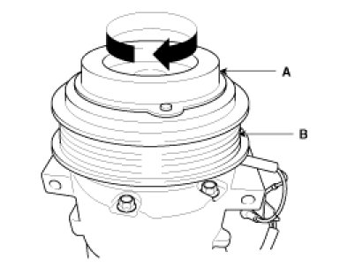
3. Check operation of the magnetic clutch.Connect the compressor side terminals to the battery (+) terminal and the ground battery (-) terminal to the compressor body.Check the magnetic clutch operating noise to determine the condition.
A. Do not spill the refrigerant oil on the vehicle; it may damage the paint; if the refrigerant oil contacts the paint, wash it off immediately.
B. Adjust the drive belt
C. Charge the system and test its performance.
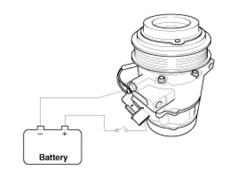
Disassembly
1. Remove the front right tire (A).
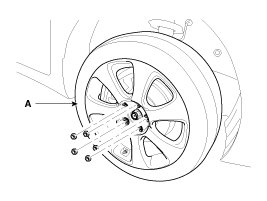
2. Remove the engine side cover (A).
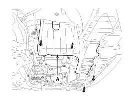
3. Remove the wheel house (A).
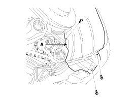
4. Remove the center bolt (A) while holding the disc & hub assembly with SST( 09977-29000).
Tightening torque :
10 - 15N.m (1.02 - 1.53kgf.m, 7.37 - 11lbf.ft)
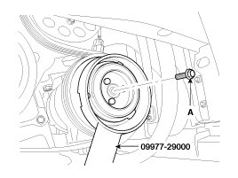
5. Remove the disc & hub assembly (A) and shim (gap washer), taking care not to lose the shims.
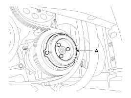
6. Loosen the drive belt.
7. Disconnect the retainer ring (A) and then remove the pulley (B).
NOTE:
- Be careful not to damage the pulley (B) and compressor during removal/installation.
- Once retainer ring (A) is removed, replace it with a new one.
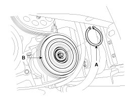
8. Remove the retainer ring (B) and then remove the field coil (C). Be careful not to damage the coil and compressor.
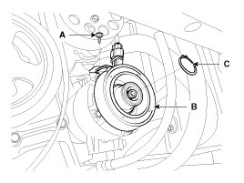
9. Reassemble the compressor clutch in the reverse order of disassembly, and note these items :
A. Clean the pulley and compressor sliding surfaces with non-petroleum solvent.
B. Install new retainer rings, and make sure they are fully seated in the groove.
C. Make sure that the pulley turns smoothly after its reassembled.